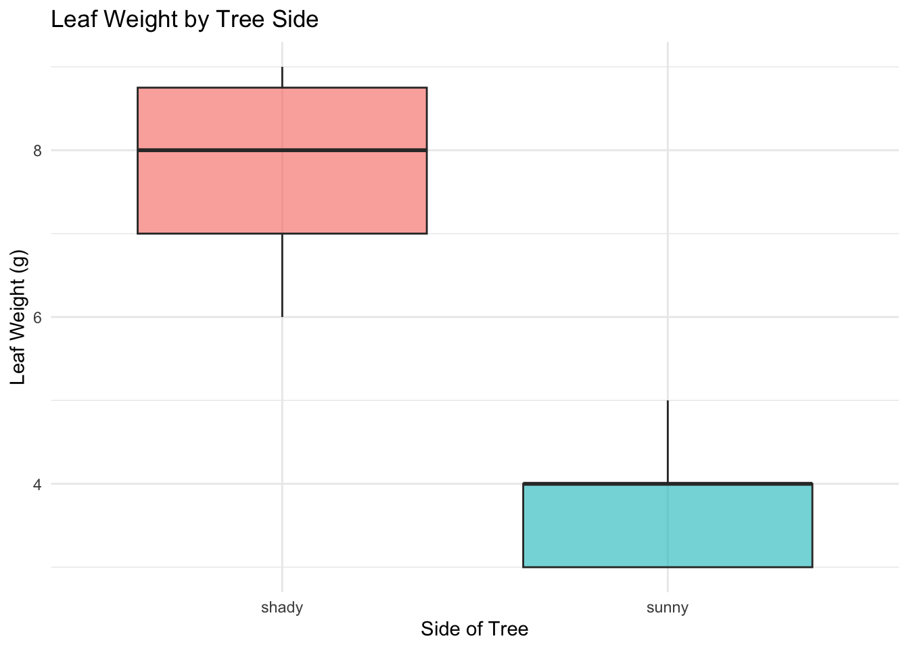
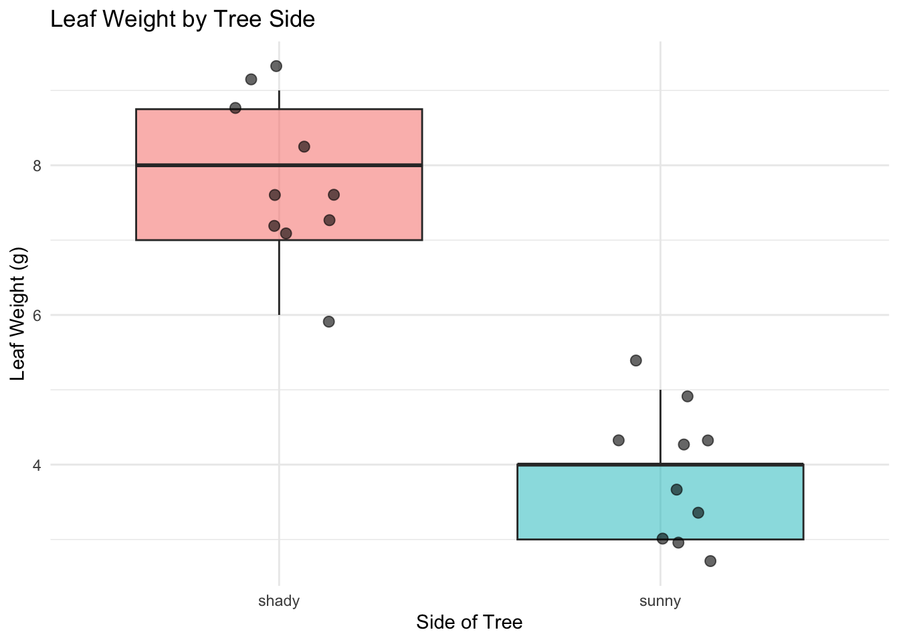
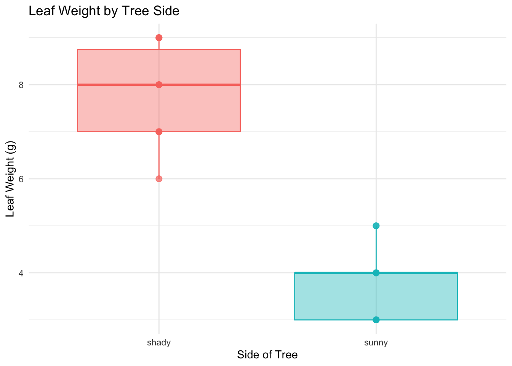
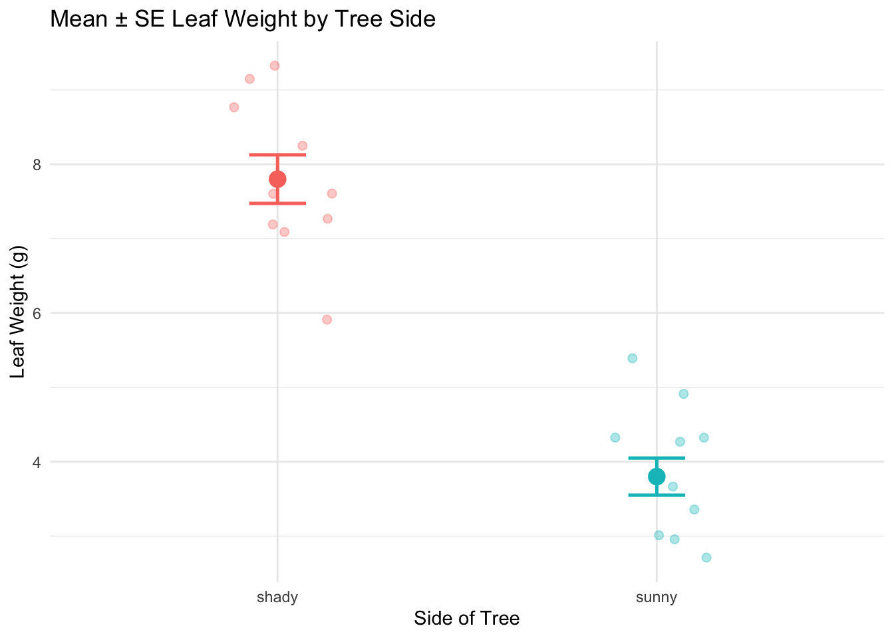
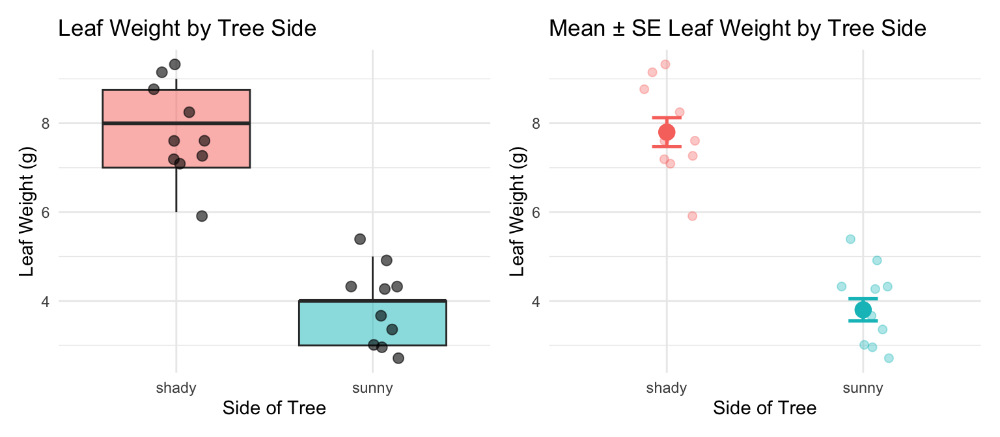

# Load all packages — always at the top of every script --------
library(readxl) # reading Excel files (.xlsx)
library(tidyverse) # data manipulation + ggplot2
library(skimr) # fast descriptive column summariesLecture 03 — Describing Our Data
Summaries, statistics, and our first real comparisons
Where we left off (Lecture 02)
- Setup — R and Positron installed; project folders created (
documents/,data/,output/,figures/,scripts/) - R as a calculator — arithmetic, order of operations
- Assignment — storing values with
<- - Vectors —
c(), indexing, data types (numeric,character,logical) - Functions — calling built-in functions, passing arguments
- First look — loaded our leaf data with
read_excel()and made a firstggplot
Note
✅ Key idea from Lecture 02
You can get data into R and make a plot. Today we learn to describe and summarize what we actually have.
Goals for Today
- Review what descriptive statistics really mean
- mean, median, variance, SD, SE
- a first look at p-values
- Count observations correctly — the NA problem
- Compute stats three ways:
- base R,
tidyverse, andskimr
- base R,
- Visualize distributions:
- boxplots with individual points overlaid
- mean ± SE summary plots
Tip
🖐 Try it yourself
By the end you will compute and plot descriptive stats on our own leaf data.
Our tools today:
readxltidyverseskimr
References:
Naming conventions:
- data frames →
_df - plots →
_plot - models →
_model
Our Scientific Question
Biological prediction: Leaves on the shady side of a tree will be larger and heavier to capture more of the limited light.
| Hypothesis | |
|---|---|
| H₀ — null | No difference in leaf size between sunny and shady sides |
| Hₐ — alternate | Leaf size differs between sunny and shady sides |
Plan for this unit:
- Today — describe the data
- Lecture 04 — formally test the hypotheses with a t-test
Statistics helps us decide which hypothesis is better supported by the data.
Our Data — Long Format
Each row = one leaf
| Column | Description |
|---|---|
index |
leaf number (1–20) |
side |
"sunny" or "shady" |
weight_g |
leaf weight (g) |
width_cm |
leaf width (cm) |
height_cm |
leaf height (cm) |
This is called long format — one measurement per row, group label in a column.
Long vs Wide format:
| Shape | Layout |
|---|---|
| Long | one row per leaf; side in a column |
| Wide | one row per leaf pair; sunny_wt, shady_wt as separate columns |
R and ggplot2 work best with long format. We will convert between the two in a later lecture.
Load Libraries
Note
Install once — load every session
Run in the Console one time only:
install.packages("readxl")
install.packages("skimr")Then every session: library(readxl) activates it.
Why readxl?
read_csv() reads .csv files. read_excel() reads .xlsx files. Both land the data in an R data frame.
Load Our Leaf Data
# Read the Excel file from the data folder -----------
tree_df <- read_excel(
"data/2026_06_25_tree_experiment_raw_data.xlsx"
)# Preview the first rows of the data -----------------
head(tree_df)# A tibble: 6 × 5
index side weight_g width_cm height_cm
<dbl> <chr> <dbl> <dbl> <dbl>
1 1 sunny 4 12 21
2 2 sunny 3 14 22
3 3 sunny 5 12 21
4 4 sunny 3 13 23
5 5 sunny 4 15 22
6 6 sunny 3 13 23- Path is relative to your project folder
"data/..."means: look in thedata/sub-folder- This path works on any computer, not just yours
- The file stays untouched — R reads; it does not edit
Inspect the Data
# Column names, types, and first values --------------
glimpse(tree_df)Rows: 20
Columns: 5
$ index <dbl> 1, 2, 3, 4, 5, 6, 7, 8, 9, 10, 11, 12, 13, 14, 15, 16, 17, 1…
$ side <chr> "sunny", "sunny", "sunny", "sunny", "sunny", "sunny", "sunny…
$ weight_g <dbl> 4, 3, 5, 3, 4, 3, 5, 4, 3, 4, 7, 8, 6, 9, 8, 7, 8, 9, 9, 7
$ width_cm <dbl> 12, 14, 12, 13, 15, 13, 16, 13, 14, 15, 9, 18, 17, 18, 19, 1…
$ height_cm <dbl> 21, 22, 21, 23, 22, 23, 21, 24, 23, 23, 28, 29, 27, 28, 27, …# Rows × columns
dim(tree_df)[1] 20 5<chr>= character (text)<dbl>= numeric (decimal)
10 sunny leaves, 10 shady leaves — we have a balanced design.
What Is the Mean?
\[\bar{x} = \frac{\sum_{i=1}^{n} x_i}{n}\]
- Add up all values, divide by n
- The balance point of the distribution
- Sensitive to outliers — one very large value pulls the mean up
Example:
Values: 5, 6, 7, 8, 50 → mean = 15.2
Is 15.2 a fair summary? Not really — the outlier dominates!
Why it matters:
- The most commonly reported statistic
- Used in every t-test, ANOVA, and regression
- Always pair it with a measure of spread (SD or SE)
Calculating the Mean — filter() and pull()
# Extract sunny leaf weights as a plain vector --------
sunny_wt <- tree_df %>%
filter(side == "sunny") %>%
pull(weight_g)
sunny_wt # look at the raw values [1] 4 3 5 3 4 3 5 4 3 4# Now calculate the mean of that vector --------------
mean_sunny <- mean(sunny_wt, na.rm = TRUE)
cat("Mean sunny weight:", round(mean_sunny, 2), "g\n")Mean sunny weight: 3.8 gfilter(side == "sunny")— keeps only sunny rowspull(weight_g)— extracts that column as a vectorna.rm = TRUE— removes anyNAbefore computing
Key pattern:
filter() → picks rows
pull() → extracts a column as a vector
What Is the Median?
The middle value when data are sorted
| Sorted data | Median |
|---|---|
| 5, 6, 7, 8, 50 | 7 |
| 5, 6, 7, 8, 50, 51 | (7 + 8) / 2 = 7.5 |
- Not pulled by outliers → robust
- If mean ≫ median → right-skewed
- If mean ≈ median → roughly symmetric
# Median for each side via filter + pull -------------
shady_wt <- tree_df %>%
filter(side == "shady") %>%
pull(weight_g)
med_sunny <- median(sunny_wt, na.rm = TRUE)
med_shady <- median(shady_wt, na.rm = TRUE)
cat("Median sunny:", round(med_sunny, 2), "\n")Median sunny: 4 cat("Median shady:", round(med_shady, 2), "\n")Median shady: 8 What Is Variance?
\[s^2 = \frac{\sum_{i=1}^{n}(x_i - \bar{x})^2}{n - 1}\]
- For each value, compute distance from mean: \((x_i - \bar{x})\)
- Square those distances → all positive
- Sum them up, divide by \(n - 1\)
Dividing by \(n - 1\) gives an unbiased estimate of population variance.
Larger variance = more spread = more uncertainty
# Variance for each side ----------------------------
var_sunny <- var(sunny_wt, na.rm = TRUE)
var_shady <- var(shady_wt, na.rm = TRUE)
cat("Variance sunny:", round(var_sunny, 2), "\n")Variance sunny: 0.62 cat("Variance shady:", round(var_shady, 2), "\n")Variance shady: 1.07
Note
Variance is in squared units (g²) — hard to interpret. That is why we use SD.
What Is Standard Deviation?
\[s = \sqrt{s^2} = \sqrt{\frac{\sum(x_i - \bar{x})^2}{n-1}}\]
- The square root of variance → back in original units (g) ✓
- For a normal distribution:
- ~68% of values fall within mean ± 1 SD
- ~95% fall within mean ± 2 SD
- Reports how spread out individual data points are
# Standard deviation for each side ------------------
sd_sunny <- sd(sunny_wt, na.rm = TRUE)
sd_shady <- sd(shady_wt, na.rm = TRUE)
cat("SD sunny:", round(sd_sunny, 2), "g\n")SD sunny: 0.79 gcat("SD shady:", round(sd_shady, 2), "g\n")SD shady: 1.03 gMost sunny leaves are within ±0.79 g of the mean.
What Is Standard Error?
\[SE = \frac{s}{\sqrt{n}}\]
- Measures how precisely we know the mean
- Not the spread of raw data — the uncertainty of the mean itself
- Gets smaller as n increases → more data = more precise estimate
| Describes | |
|---|---|
| SD | spread of individual data points |
| SE | precision of the sample mean |
We report SE when making claims about group means.
# SE = SD / sqrt(n) — need correct n ----------------
n_sunny <- sum(!is.na(sunny_wt))
n_shady <- sum(!is.na(shady_wt))
se_sunny <- sd_sunny / sqrt(n_sunny)
se_shady <- sd_shady / sqrt(n_shady)
cat("n sunny =", n_sunny, "\n")n sunny = 10 cat("SE sunny =", round(se_sunny, 2), "g\n\n")SE sunny = 0.25 gcat("n shady =", n_shady, "\n")n shady = 10 cat("SE shady =", round(se_shady, 2), "g\n")SE shady = 0.33 gA First Look at the p-value
The key question: Could the difference in means be due to random chance alone?
A p-value answers:
“If H₀ were true (no real difference), how likely is it that we would see a difference this large, just by chance?”
- p < 0.05 → data are unlikely under H₀ → reject H₀
- p ≥ 0.05 → data are consistent with H₀ → fail to reject H₀
We will calculate a p-value in Lecture 04.
Important
Common misconception
A p-value is not the probability that H₀ is true.
It is the probability of observing this data (or more extreme) given that H₀ is true.
Our shady leaves weigh ~7.8 g vs sunny at ~3.8 g.
Could that gap be random chance? We will find out next lecture.
The Problem with length()
# length() counts ALL positions — including NAs ------
x <- c(4, 3, NA, 7, NA) # a vector with missing values
length(x) # returns 5 — but 2 are NA![1] 5sum(is.na(x)) # how many NAs are there?[1] 2# Using length() in SE gives the WRONG n and SE ------
wrong_n <- length(x)
wrong_se <- sd(x, na.rm = TRUE) / sqrt(wrong_n)
cat("Wrong n =", wrong_n, "\n")Wrong n = 5 cat("Wrong SE =", round(wrong_se, 3), "\n")Wrong SE = 0.931 length(x)counts all positions in the vector — includingNA- This is a silent error — R will not warn you!
- Using n = 5 in SE = SD / √n when n should be 3 gives the wrong answer
Fix — sum(!is.na())
# Break it down step by step --------------------------
x <- c(4, 3, NA, 7, NA)
is.na(x) # TRUE where NA, FALSE where real[1] FALSE FALSE TRUE FALSE TRUE!is.na(x) # FLIP: TRUE where real, FALSE where NA[1] TRUE TRUE FALSE TRUE FALSEsum(!is.na(x)) # count the TRUEs = number of real values[1] 3# Apply to our real leaf data ------------------------
# (Our data has no NAs — but always use this pattern!)
n_sun_check <- sum(!is.na(sunny_wt))
cat("Non-missing sunny weights =", n_sun_check, "\n")Non-missing sunny weights = 10 How it works step by step:
is.na(x)→TRUEfor eachNA!is.na(x)→ flips it:TRUEfor real valuessum(...)→ countsTRUEs
Tip
Best practice: always use sum(!is.na(x)) when you need n — even when you think there are no NAs.
All Stats — Base R, One Group at a Time
# All stats for the sunny side using our vectors ------
n_s <- sum(!is.na(sunny_wt))
mean_s <- mean(sunny_wt, na.rm = TRUE)
med_s <- median(sunny_wt, na.rm = TRUE)
sd_s <- sd(sunny_wt, na.rm = TRUE)
se_s <- sd_s / sqrt(n_s)
cat("--- Sunny Leaves ---\n")--- Sunny Leaves ---cat("n =", n_s, "\n")n = 10 cat("Mean =", round(mean_s, 2), "\n")Mean = 3.8 cat("Median =", round(med_s, 2), "\n")Median = 4 cat("SD =", round(sd_s, 2), "\n")SD = 0.79 cat("SE =", round(se_s, 2), "\n")SE = 0.25 - Every function takes
na.rm = TRUE cat()prints clean labelled output- This is clear but repetitive for many groups → that is why we use
group_by()next
Stats the Tidy Way — group_by() + summarize()
# Calculate all stats for both sides at once ---------
stats_df <- tree_df %>%
group_by(side) %>%
summarize(
n = sum(!is.na(weight_g)),
mean_wt = round(mean(weight_g, na.rm = TRUE), 2),
med_wt = round(median(weight_g, na.rm = TRUE), 2),
sd_wt = round(sd(weight_g, na.rm = TRUE), 2),
se_wt = round(sd_wt / sqrt(n), 2)
)
stats_df# A tibble: 2 × 6
side n mean_wt med_wt sd_wt se_wt
<chr> <int> <dbl> <dbl> <dbl> <dbl>
1 shady 10 7.8 8 1.03 0.33
2 sunny 10 3.8 4 0.79 0.25group_by(side)— splits the data by thesidecolumnsummarize()— collapses each group to one row of stats- You get both groups in one clean table
- You can reference a column you just created (
sd_wt→se_wt)
Multiple Variables at Once
# group_by() works on any numeric column you choose --
size_stats_df <- tree_df %>%
group_by(side) %>%
summarize(
n = sum(!is.na(weight_g)),
mean_wt = round(mean(weight_g, na.rm = TRUE), 2),
mean_ht = round(mean(height_cm, na.rm = TRUE), 2),
mean_wd = round(mean(width_cm, na.rm = TRUE), 2)
)
size_stats_df# A tibble: 2 × 5
side n mean_wt mean_ht mean_wd
<chr> <int> <dbl> <dbl> <dbl>
1 shady 10 7.8 27.9 17.3
2 sunny 10 3.8 22.3 13.7With one group_by() pipe you can summarize all three measurements across both sides.
Do the numbers support our hypothesis?
- Shady heavier? → check
mean_wt - Shady taller? → check
mean_ht - Shady wider? → check
mean_wd
Fast Summaries with skimr
# skim() grouped by side — full column summaries ------
tree_df %>%
group_by(side) %>%
skim()| Name | Piped data |
| Number of rows | 20 |
| Number of columns | 5 |
| _______________________ | |
| Column type frequency: | |
| numeric | 4 |
| ________________________ | |
| Group variables | side |
Variable type: numeric
| skim_variable | side | n_missing | complete_rate | mean | sd | p0 | p25 | p50 | p75 | p100 | hist |
|---|---|---|---|---|---|---|---|---|---|---|---|
| index | shady | 0 | 1 | 15.5 | 3.03 | 11 | 13.25 | 15.5 | 17.75 | 20 | ▇▇▇▇▇ |
| index | sunny | 0 | 1 | 5.5 | 3.03 | 1 | 3.25 | 5.5 | 7.75 | 10 | ▇▇▇▇▇ |
| weight_g | shady | 0 | 1 | 7.8 | 1.03 | 6 | 7.00 | 8.0 | 8.75 | 9 | ▂▇▁▇▇ |
| weight_g | sunny | 0 | 1 | 3.8 | 0.79 | 3 | 3.00 | 4.0 | 4.00 | 5 | ▇▁▇▁▃ |
| width_cm | shady | 0 | 1 | 17.3 | 3.02 | 9 | 17.25 | 18.0 | 19.00 | 19 | ▁▁▁▂▇ |
| width_cm | sunny | 0 | 1 | 13.7 | 1.34 | 12 | 13.00 | 13.5 | 14.75 | 16 | ▅▇▅▅▂ |
| height_cm | shady | 0 | 1 | 27.9 | 0.88 | 27 | 27.00 | 28.0 | 28.75 | 29 | ▇▁▆▁▆ |
| height_cm | sunny | 0 | 1 | 22.3 | 1.06 | 21 | 21.25 | 22.5 | 23.00 | 24 | ▆▃▁▇▂ |
Per column and per group: n_missing, mean, sd, percentiles (p0 to p100), and a mini histogram.
Tip
skim() is your fastest first look at any dataset. Pair it with group_by() to compare groups instantly.
The [[ ]] Notation
# Three ways to extract the same column as a vector --
# 1. Dollar sign notation
tree_df$weight_g [1] 4 3 5 3 4 3 5 4 3 4 7 8 6 9 8 7 8 9 9 7# 2. Double bracket with name in quotes
tree_df[["weight_g"]] [1] 4 3 5 3 4 3 5 4 3 4 7 8 6 9 8 7 8 9 9 7# 3. Double bracket with a variable holding the name
col_name <- "weight_g"
tree_df[[col_name]] # works! [1] 4 3 5 3 4 3 5 4 3 4 7 8 6 9 8 7 8 9 9 7# tree_df$col_name # does NOT work- All three return an identical vector of all 20 weights
$is great for interactive typing[[ ]]is more flexible — accepts names stored in variables- Essential for writing functions and loops later
Using [[ ]] with filter()
# Combine filter() and [[ ]] to get one group --------
sunny_df <- tree_df %>% filter(side == "sunny")
sun_wt <- sunny_df[["weight_g"]]
n_sun <- sum(!is.na(sun_wt))
m_sun <- mean(sun_wt, na.rm = TRUE)
se_sun <- sd(sun_wt, na.rm = TRUE) / sqrt(n_sun)
cat("Sunny — n:", n_sun,
"| mean:", round(m_sun, 2),
"| SE:", round(se_sun, 2), "g\n")Sunny — n: 10 | mean: 3.8 | SE: 0.25 gshady_df <- tree_df %>% filter(side == "shady")
sha_wt <- shady_df[["weight_g"]]
n_sha <- sum(!is.na(sha_wt))
m_sha <- mean(sha_wt, na.rm = TRUE)
se_sha <- sd(sha_wt, na.rm = TRUE) / sqrt(n_sha)
cat("Shady — n:", n_sha,
"| mean:", round(m_sha, 2),
"| SE:", round(se_sha, 2), "g\n")Shady — n: 10 | mean: 7.8 | SE: 0.33 gPattern:
filter()→ subset to one group[[ ]]→ extract the column as a vector- Apply
mean(),sd(),sum(!is.na())
Do the means match your prediction?
- Sunny: ~3.8 g
- Shady: ~7.8 g
Shady leaves appear heavier — but is the difference statistically significant?
Extension: A Simple Stats Function
# A reusable function using filter() + [[ ]] --------
# We will build functions properly in a later lecture!
describe_side <- function(data, grp, col_name) {
x <- data %>% filter(side == grp) %>% pull(col_name)
n <- sum(!is.na(x))
m <- mean(x, na.rm = TRUE)
s <- sd(x, na.rm = TRUE)
cat(grp, "|", col_name,
"→ n:", n,
"| mean:", round(m, 2),
"| SE:", round(s/sqrt(n), 2), "\n")
}
describe_side(tree_df, "sunny", "weight_g")sunny | weight_g → n: 10 | mean: 3.8 | SE: 0.25 describe_side(tree_df, "shady", "weight_g")shady | weight_g → n: 10 | mean: 7.8 | SE: 0.33 describe_side(tree_df, "sunny", "height_cm")sunny | height_cm → n: 10 | mean: 22.3 | SE: 0.33 describe_side(tree_df, "shady", "height_cm")shady | height_cm → n: 10 | mean: 27.9 | SE: 0.28 What this function does:
- Accepts data frame, group name, and column name
- Filters to that group with
filter() - Extracts the column with
pull() - Computes n, mean, SE
- Prints a compact labelled summary
For grins 🎉 — we will build these properly in Lecture 08!
Boxplot — Basic Structure
# Basic boxplot — data is ALREADY long format --------
# No reshaping needed!
tree_box_plot <- tree_df %>%
ggplot(aes(x = side, y = weight_g, fill = side)) +
geom_boxplot(alpha = 0.6, outlier.shape = NA) +
labs(
title = "Leaf Weight by Tree Side",
x = "Side of Tree",
y = "Leaf Weight (g)",
fill = "Side"
) +
theme_minimal() +
theme(legend.position = "none")
tree_box_plot
Boxplot anatomy:
- Middle line = median
- Box edges = 25th and 75th percentile (IQR)
- Whiskers = 1.5 × IQR
- Dots beyond whiskers = outliers
Because our data is already in long format, we skip the pivot_longer() step entirely — ggplot2 reads side straight off the x-axis.
Boxplot — Overlay Individual Points
# Add raw data points over the boxplot ---------------
tree_jitter_plot <- tree_df %>%
ggplot(aes(x = side, y = weight_g, fill = side)) +
geom_boxplot(alpha = 0.5, outlier.shape = NA) +
geom_point(
position = position_jitter(width = 0.15, seed = 42),
alpha = 0.6,
size = 2.5
) +
labs(
title = "Leaf Weight by Tree Side",
x = "Side of Tree",
y = "Leaf Weight (g)",
fill = "Side"
) +
theme_minimal() +
theme(legend.position = "none")
tree_jitter_plot
Key arguments:
position_jitter(width = 0.15)— spreads points a little left and rightseed = 42— same jitter layout every renderalpha = 0.6— semi-transparent to show overlapsize = 2.5— point size
Tip
Always show raw points with a boxplot — with only 10 leaves per group, every point matters!
Boxplot — Using position_dodge()
# position_dodge() spreads groups apart horizontally -
tree_dodge_plot <- tree_df %>%
ggplot(aes(x = side, y = weight_g,
color = side, fill = side)) +
geom_boxplot(alpha = 0.4, outlier.shape = NA) +
geom_point(
position = position_dodge(width = 0.3),
alpha = 0.7,
size = 2.5
) +
labs(
title = "Leaf Weight by Tree Side",
x = "Side of Tree",
y = "Leaf Weight (g)"
) +
theme_minimal() +
theme(legend.position = "none")
tree_dodge_plot
position_dodge(width = 0.3)
- Spreads overlapping geoms horizontally
- Most useful when you have two grouping variables (e.g.,
x = species,fill = treatment) widthcontrols how far apart groups are spread
We will use position_dodge() extensively in future lectures when we have factorial designs.
Mean ± SE Plot — stat_summary()
# stat_summary() computes and plots mean and SE ------
tree_mean_se_plot <- tree_df %>%
ggplot(aes(x = side, y = weight_g, color = side)) +
geom_point(
position = position_jitter(width = 0.15, seed = 42),
alpha = 0.35, size = 2
) +
stat_summary(fun = mean, geom = "point",
size = 4) +
stat_summary(fun.data = mean_se, geom = "errorbar",
width = 0.15, linewidth = 0.9) +
labs(
title = "Mean ± SE Leaf Weight by Tree Side",
x = "Side of Tree",
y = "Leaf Weight (g)",
color = "Side"
) +
theme_minimal() +
theme(legend.position = "none")
tree_mean_se_plot
Two stat_summary() layers:
| call | what it draws |
|---|---|
fun = mean |
large point at the mean |
fun.data = mean_se |
error bars for ± 1 SE |
- Individual points in the background (
alpha = 0.35) - Mean shown as a larger foreground point
- Error bars = ± 1 SE
This is the standard comparison figure in biology.
Comparing the Two Plot Types
# Arrange both plots side by side --------------------
library(patchwork)
tree_jitter_plot + tree_mean_se_plot
When to use each:
| Plot type | Use when |
|---|---|
| Boxplot + points | showing full distribution |
| Mean ± SE | making group comparisons |
With only n = 10 per group, showing every point is essential — the reader needs to see the raw data.
Boxplots show where data fall. Mean ± SE shows how confident you are in the mean.
What We Learned Today
Statistics concepts:
- Mean — balance point; sensitive to outliers
- Median — middle value; robust
- Variance / SD — spread of individual data
- SE — precision of the sample mean
- p-value — how unlikely are the data if H₀ is true?
R skills:
read_excel()— load real Excel datafilter() %>% pull()— extract a group’s values as a vectorgroup_by() %>% summarize()— all stats for all groups at oncesum(!is.na())— the right way to count nskim()— instant full dataset overview[[ ]]— flexible column extractiongeom_boxplot()+geom_point()— no pivot needed with long data!stat_summary()— mean ± SE
References:
- 📖 R4DS §3 — Data Transformation
- 📖 R4DS §13 — Numbers
- 📖 R4DS §18 — Missing Values
- 📖 R4DS §27 — Base R
- 🌐 Data Carpentry
Up next — Lecture 04:
- Two-sample t-test
- Checking assumptions (normality, equal variance)
- Interpreting and reporting results